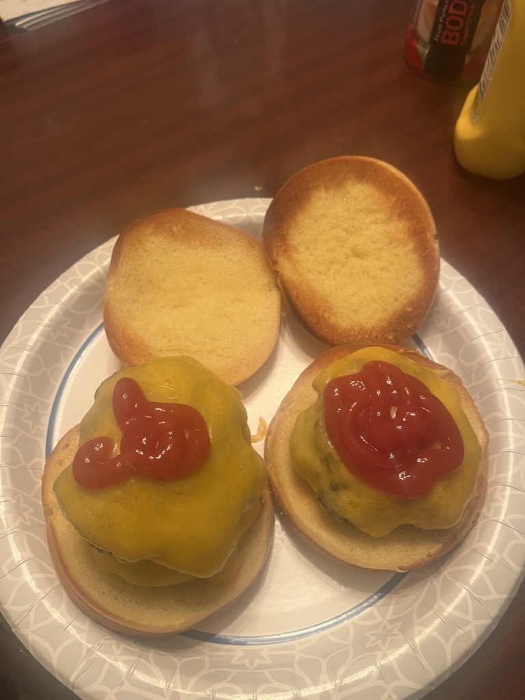

Take out cheeseburgers are good, but I think homemade is great. This recipe will be simple, whether on an inside griddle or outside.
| Prep Time | Cook Time | Servings |
|---|---|---|
| 25 mins | 10 mins | 8 Burgers |
Ingredients
- 3 lb Ground Beef (73/27 lean to fat ratio is opitmal, but 80/20 is also good)
- 24 Slices of American Cheese
- 8 Hamburger Buns (this can be used to make double burgers for people who want them)
- 3 tsp salt
- 3 tsp pepper
- 2 tsp garlic powder
- 2 tsp onion powder
- Toppings: Lettuce, Tomato, Onion
Instructions
- Heat up your griddle or pan on medium or high heat (meaning on a stove or propane griddle).
- Once your beef is in a bowl, add the seasonings listed above.
- Divide the beef into 15 balls.
- Put the "meatballs" on the pan or griddle, and using an iron press or spatula, press them down.
- Cook patties for 3-4 minutes per side.
- Place a cheese slice on each patty during the last minute of cooking to melt.
- Toast the buns and assemble with your favorite toppings.